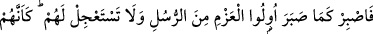
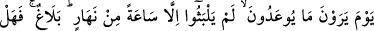
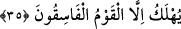

durumları da böyleydi.
“İnsanlar uykudadırlar, öldükleri zaman uyanırlar” sözü bu mânâda söylenmiştir.
Bilesin ki, nasıl ölüm hak ve gerçek olup vukûunda hiç kimsenin şüphesi yoksa,
ölümden sonraki hayat da öyledir. İnkâr edenin inkârının bir değeri yoktur. Zira bu
cehaletten kaynaklanmaktadır. Yoksa Allah Teâlâ uykudan sonra zorunlu olarak
uyanmayı bu hususa bir darb-ı mesel yapmıştır.
Bunun için “uyku ölümün kardeşidir” denilmiştir. Sonra hayat da çeşit çeşittir. Bir de
İsrafil (a.s.)’ın sûra üflemesiyle kabirlerde hayat vardır. Bir diğeri ise feyz-i rûhânî ile
kalplerin hayatıdır. Bir de sırr-ı rabbânî ile ruhların hayatı vardır. İlâhî ve rabbânî
vuslat cennetine girmeden hiç kimse rûhânî ve cismânî azaptan kurtulamaz. Bu da bir
takım riyâzetlere ve mücâhedelere göğüs gerip katlanmakla hâsıl olur. Zira hadis-i
şerifte şöyle buyrulur: “cennet nefsin hoşlanmadığı şeylerle kuşatılmıştır.”[46]
Naklederler ki bir gün Hasan Basrî, Mâlik b. Dînâr, Şakîk Belhî (k.s) Râbia-i
Adeviyye’nin yanındaydılar. Râbia hasta idi. Hasan; “Mevlâsından gelen darbelere
sabretmeyen bir kimse dâvâsında sâdık değildir.” dedi. Şakîk; “Mevlâsının darbesine
şükretmeyen kimse dâvâsında sâdık değildir.” dedi. Mâlik ise; “Mevlâsından gelen
darbelerden lezzet almayan kimse sâdık değildir.” dedi. Râbia’ya sen de söyle dediler.
O ise şöyle söyledi; “Mevlâsını müşâhedede darbenin elemini unutmayan kimse
dâvâsında sâdık değildir” dedi. Bunda şaşılacak bir şey yoktur. Çünkü Mısır kadınları
mahlûkun Hz. Yûsuf müşâhedesinde yaralanmanın acısını duymadılar. Eğer bir kimse
Hâlık’ın müşâhedesinde bu sıfat üzere olursa, bunda şaşılacak bir şey yoktur.
Bundan anlaşılan şudur ki, kişi dâvâsında sâdık ise hakkı taleb eder. Başına gelen
hiçbir şeyden rahatsız olmaz ve hiçbir şey ona ağır gelmez. Allah’tan ancak Allah’ın
ondan istediğini ister.
Dostun kahrı âşıkları ateşe attığı zaman,
Kevser pınarına bakacak olursam nâmerdim.
İşte dâvâsında sâdık olan kul, dünyada mücâhede ateşiyle nefsine azab etmekten uzak
kalmaz. Sonra nefsini aşk ve muhabbet ateşinde tamamen yakar, yok eder. Artık vücudda
yakma ile alâkalı bir şey kalmayınca bu kişi kıyâmette nasıl ateşe sunulur ki? Çünkü bu
kişinin cevheri temizlenip özleşmiş, nefsi de îmân edip gönül huzûruna kavuşmuştur.
Yardım ve imdad Allah’tandır.